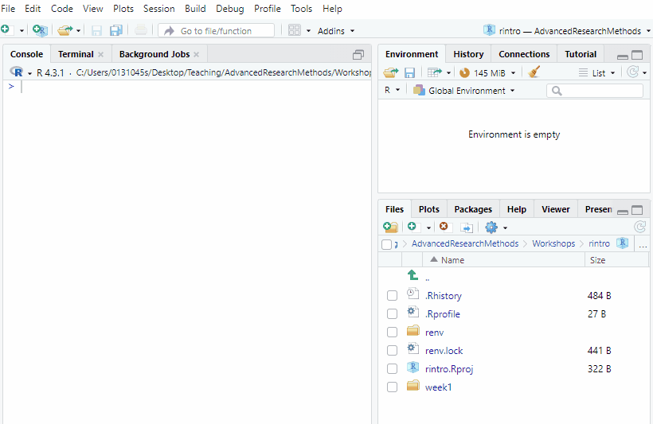
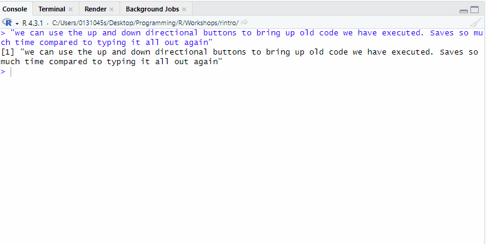
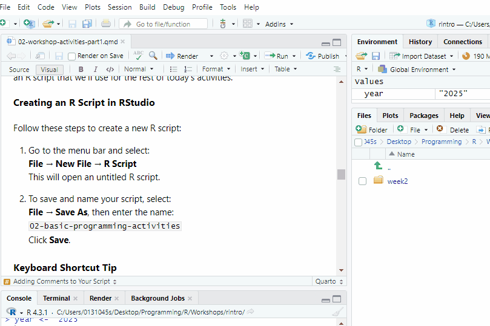
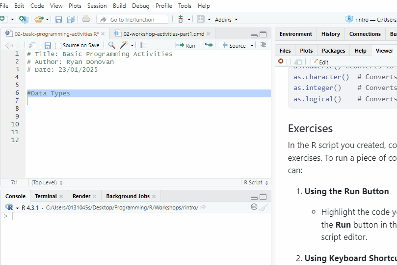
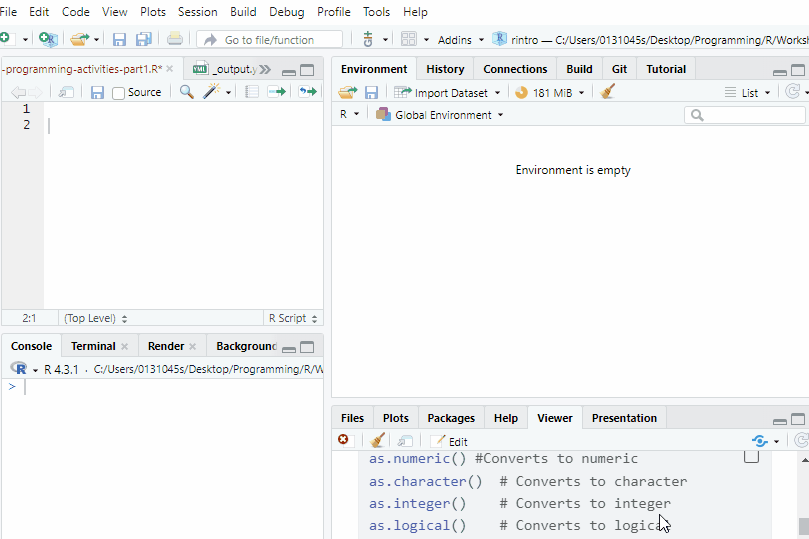
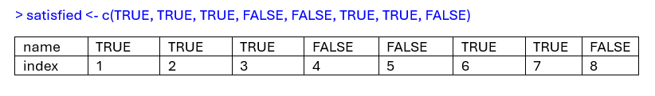

> setwd("C:/Users/0131045s/Desktop/PS6183/rintro/week2")Week 2 - Activities
Programming Fundamentals in R (Part 1) Workshop
In this week workshop we are going to practice some basic programming concepts in R through several activities and exercises. These should build you confident and skills in navigating R and RStudio. There is a lot here, so do not worry if you don’t get everything done in the session, or if takes a while for certain concepts to click.
Each activity includes a summary of the key points to help you understand the concepts and techniques. If you get stuck on an exercise, take a moment to review the key points in the activity—it might give you the clarity you need to move forward.
Don’t hesitate to collaborate! Feel free to chat with your neighbours and help each other out. Myself, Ciara, and Aoife will also be around to provide support, so don’t hesitate to ask us for help.
Activity 1: Set up your Working Directory
One of the first steps in each of these workshops is setting up your working directory. If you remember from last week, a directory is simply another word for a folder. The working directory is the default folder where R will look to import files or save any files you export.
If you don’t set the working directory, R might not be able to locate the files you need (e.g., when importing a dataset) or you might not know where your exported files have been saved. Setting the working directory beforehand ensures that everything is in the right place and avoids these issues.
Steps to Set Up Your Working Directory
Click:
Session → Set Working Directory → Choose DirectoryNavigate to the folder you created for this course (this should be the same folder where you created
week1).Create a new folder called
week2inside this directory.Select the
week2folder and click Open.

Verify Your Working Directory
After setting the directory, check the output in the console to confirm that the file path inside the setwd() command is correct. It should look something like this:
You can always check your current working directory by typing in the following command in the console
> getwd()
[1] "C:/Users/0131045s/Desktop/PS6183/rintro/week2"Activity 2: Console Commands
In R, we can write and execute code in two places: a script and the console. Both options enable you to run the same code with the same results, but there are important differences between the two:
Scripts are ideal for saving, sharing, and reusing your code. You can think of them as your “notebook” for coding, where you can document and organise your work.
The console, on the other hand, is more like a “scratchpad” for quick, one-off commands. Code entered in the console is not saved automatically and cannot be reused unless you copy and save it elsewhere.
For this reason, we’ll focus primarily on using scripts throughout this course. However, there are specific scenarios where using the console is more practical or efficient. When those situations arise, we’ll discuss why the console is the better choice.
For now, let’s take some time to practice using the console. This activity will help you feel comfortable working with it when needed.
For each of the following exercises, make sure to type out the following exercises in the console and press enter/return.
Exercises
Basic Calculations
Perform the following calculations in the console:Add 45 and 32.
Divide 120 by 8.
Multiply 7 by 15.
Multiply 21 by 4, then divide by 2.
Calculate the Mean
Imagine you want to calculate the average (mean) of these five numbers: 15, 22, 18, 30, and 3. Use the R console to find the correct result.
Tip
If your answer seems unusually high, remember that R follows the BEDMAS (Brackets, Exponents, Division/Multiplication, Addition/Subtraction) order of operations.
- Fixing the
+Operator Error
Run the following code in the console. If you encounter the+operator, how can you fix it? Test your answer in the console.
(60 / 100
+
Tip
The + operator in R indicates that the command is incomplete. Finish the command and press Enter again
- Identifying and Fixing Errors
Run the following code exactly as it appears. Take note of the error message. What went wrong? What do you think the correct code should be?
(20 = 30) / 34 - 21 Error in 20 = 30: invalid (do_set) left-hand side to assignment
Tip
Look at the 20 = 30, and remember that R takes what we say literally. What would be wrong with this statement if we meant it literally?
Using the Up Arrow to Edit Code
After running the code in Exercise 4, click anywhere in the console and press the Up arrow key on your keyboard to retrieve the last command. Fix the error in the code and run it again.Exploring Console Navigation
Press the Up arrow key a few times in the console. What happens? Now press the Down arrow key. How does it behave? Try experimenting with this feature.

Activity 3: Set up your R Script
We’ve done enough work in the console for now! Let’s switch gears and create an R script that we’ll use for the rest of today’s activities.
Creating an R Script in RStudio
Follow these steps to create a new R script:
Go to the menu bar and select:
File → New File → R Script
This will open an untitled R script.To save and name your script, select:
File → Save As, then enter the name:
02-basic-programming-activities
Click Save.
Faster Way to Create an R Script
Keyboard Shortcut Tip
There’s a faster way to do this using your keyboard:
Create a new script:
Windows: Press
Control + Shift + NMac: Press
Command + Shift + N
Save your script:
Windows: Press
Control + SMac: Press
Command + S
Add Comments to Your Script
To make your script organised and easy to understand, use comments (#) to include a title and author information at the top of your file.
# Title: Basic Programming Activities
# Author: [Your Name]
# Date: [Today's Date]
For the rest of the activities, make sure to write your code in the R script. Keep your code neat by using spacing between lines of code and commenting. I recommend to make a comment to highlight each new activity.
Activity 4: Data Types
Information on Data Types
What are the different data types?
R categorises information into data types. There are four main data types you’ll encounter:
Character (often called a “string”):
Any text enclosed in quotation marks (either double or single).
Examples:"ryan","PS6183",'introduction to R'Numeric (or Double):
Any real number, with or without decimal places.
Examples:22,34.43,54.00Integer:
Whole numbers without decimal places. To specify a number as an integer, add a capitalLat the end.
Examples:78L,55L,21LLogical:
A value that is eitherTRUEorFALSE. This is case-sensitive, so only the following examples will work:TRUE,FALSE,T,F.
It’s essential to understand data types because certain operations are valid only for specific data types. For instance, mathematical operations can only be performed on Numeric or Integer data types.
How can we check and transform data types?
We can check the data type of a piece of information by using the class function
class(78L)[1] "integer"Sometimes, we may need to convert one data type to another. R provides several functions to help with this:
as.numeric() #Converts to numeric
as.character() # Converts to character
as.integer() # Converts to integer
as.logical() # Converts to logicalExercises
In the R script you created, complete the following exercises.
Running code from an R Script
To run a piece of code from your script, you can:
Using the Run Button
Highlight the code you want to run and click the Run button in the top-right corner of the script editor.Using Keyboard Shortcuts
Place your cursor on the line of code you want to run (or highlight multiple lines), then press the following keys simultaneously:- Windows:
Ctrl Enter
- Mac:
Command Enter
- Windows:
Feel free to use whichever method is most comfortable for you!

Data Type Exercises
Guess the Data Type
Look at each of the following pieces of code. Before running them, try to guess their data type. Then, use theclass()function in R to check your answer."Hello World!"43"42.34"FALSE44.472L
Fix the Data Type Errors
The following data types have been incorrectly entered into R. Use the appropriate conversion functions to correct them:Convert
"42.34"from character to numeric.Convert
"FALSE"from logical to character.Convert
2024from numeric to character.Convert
1from integer to logical (observe the result!).
Bonus: Convert0from numeric to logical and note what happens.
Activity 5: Variables
Information on Variables
What are variables?
Variables are labels for pieces of information we want to save and use later. To create a variable, we first specify the variable’s name, use the assignment operator (<-), specify the information that will be stored in that variable, and then run that line of code.
year <- "2024"Once we have created a variable, we can type of that variable instead of its information.
print(year)[1] "2024"We can change (reassign) the piece of information that is stored to a variable.
year <- "2025"
print(year)[1] "2025"If we look in the environment pane and tab, we can see R storing and updated the information as we run our code.

Why are variables useful?
Variables are really useful when we want perform operations across multiple pieces of information. For example, like calculating the total and mean of someones scores on Extraversion.
extra1 <- 1 #a participants score on our first extraversion item
extra2 <- 2
extra3 <- 4
extra4 <- 2
extra5 <- 3 #a participants score on our fifth extraversion item
total_extra <- extra1 + extra2 + extra3 + extra4 + extra5
mean_extra <- total_extra/5
print(total_extra)[1] 12print(mean_extra)[1] 2.4
Rules for Naming Variables
Rules for Naming Variables
There are strict and recommended rules for naming variables. Here is a summary of the strict ones (you will run into an error if you break any of these). For more details, see the textbook: Conventions for Naming Variables.
Strict Rules
Variable names can include letters (A-Z, a-z), numbers (0-9), periods (
.), and underscores (_), but must start with a letter or a period (e.g.,first_nameis valid;1st_nameis not).No spaces in variable names. Use underscores or periods instead (e.g.,
my_name,my.name).Variable names are case-sensitive (e.g.,
my_name≠My_name).Avoid using reserved words in R, such as
if,else,TRUE, orFALSE.
Exercises
Keyboard Shortcut for the Assignment Operator
<-
There is a keyboard shortcut for writing the assignment operator (<-).
On Windows, press these two keys at the same time: Alt -
On Mac, press the following two keys at the same time: Option -
Create a Character Variable
Create a variable named
favourite_colourand assign it your favourite colour.What data type is this variable? Use
class()to check.
Create Numeric Variables
Create two variables called
num1andnum2. Assign them any two numbers.Add
num1andnum2together and save the result in a new variable calledsum_result.Use
print()to show the value ofsum_result.
Convert Height
Make a variable called
height_cmand set it to your height in centimetres (e.g.,175).Create a second variable called
height_mand set it to your height in metres. To do this, divideheight_cmby 100.Use
print()to display the values ofheight_cmandheight_m.
Activity 6: Vectors
Information on Vectors
What are vectors? How do we create a vector?
In data analysis, we rarely work with individual variables or data types. Instead, we usually work with collections of data organised in data structures.
The most basic and important data structure in R is the vector. Vectors are like a column or row of data.
Creating a Vector
To create a vector, assign it a variable name, use the assignment operator (<-), and combine multiple items using the c() function (short for “combine”):
rintro_instructors <- c("Ryan", "Ciara", "Aoife")
Key points about vectors
Key Points about Vectors
The textbook provides more details on vectors, but for today’s session, here are the key points to remember:
All Elements in a Vector Must Be the Same Data Type
rintro_names <- c("Gerry", "Aoife", "Liam", "Eva", "Helena", "Ciara", "Niamh", "Owen") #character vector
rintro_marks <- c(69, 65, 80, 77, 86, 88, 92, 71) #numeric vector
rintro_satisfied <- c(TRUE, TRUE, TRUE, FALSE, FALSE, TRUE, TRUE, FALSE) #true or false vectorIf we include multiple data types, R will either throw an error or convert everything to a single data type.
rintro_grades <- c(69, 65, 80, 77, 86, 88, "A1", 71)
print(rintro_grades)[1] "69" "65" "80" "77" "86" "88" "A1" "71"In this example, all numbers are converted to characters because “A1” is a character.
Vectors Can Contain a Single Element
rintro_week <- 2LWe can check the type of vector with the class() function
class(rintro_week)[1] "integer"Functions with Vectors
You can use functions to calculate useful information about vectors:
mean(rintro_marks) # Calculate the mean[1] 78.5sort(rintro_marks) # Sort from lowest to highest[1] 65 69 71 77 80 86 88 92sort(rintro_marks, decreasing = TRUE) # Sort from highest to lowest[1] 92 88 86 80 77 71 69 65summary(rintro_satisfied) # Summarise logical values Mode FALSE TRUE
logical 3 5
How do we index a vector?
Vector Indexing
Vectors use an index to keep track of the position of each element. The index is determined by the order in which the data was entered.

Use square brackets [] to extract specific elements:
rintro_satisfied[1] # Extract the first element[1] TRUErintro_satisfied[3] # Extract the third element[1] TRUErintro_satisfied[8] # Extract the eighth element[1] FALSErintro_names[c(2, 4, 8)] # Extract the 2nd, 4th, and 8th elements[1] "Aoife" "Eva" "Owen" rintro_names[c(1:4)] # Extract elements 1 through 4[1] "Gerry" "Aoife" "Liam" "Eva" Exercises
Create Vectors of Different Data Types
Create a character vector called
friendswith the names of 3 of your friends.Create an integer vector called
yearswith the number of years you’ve been friends (use1for friendships less than a year).Create a numeric vector called
extrawith their extraversion scores (out of 5).Create a logical vector called
galwayto indicate whether each friend lives in Galway (TRUE) or not (FALSE).Use the
class()function to check the data type of each vector.
Index Specific Elements
Extract the 2nd, 4th, and 6th elements from each of the following vectors. Copy and paste the code
vect1 <- c("No, not this element", "Yes, this element", "No, not this element", "Yes, this element", "No, not this element", "Yes, this element")
vect2 <- c(0, 1, 0, 1, 0, 1)
vect3 <- c("FALSE", "TRUE", "FALSE", "TRUE", "FALSE")- Extract and Save the Bottom 3 Marks
How would you extract and save the lowest 3 marks from the
rintro_marksvector? Try it. Make sure to create the variable in your script first.
Hint: Use thesort()function as shown in the examples.Bonus: Calculate the mean of the bottom 3 marks.
Activity 7: Dataframes
Information on DataFrames
What are data frames? How do we create a data frame?
A data frame is a rectangular data structure made up of rows and columns, similar to a spreadsheet in Excel or a table in a Word document. In R, each column of a data frame is a vector, and all vectors must have the same length.
To create a data frame, we use the data.frame() function:
my_df <- data.frame(
name = c("Alice", "Bob", "Charlie"), #a character vector
age = c(25L, 30L, 22L), #an integer vector
score = c(95.65, 88.12, 75.33) #a numeric vector
)
my_df name age score
1 Alice 25 95.65
2 Bob 30 88.12
3 Charlie 22 75.33
Hold up. Why do use
= instead of <- to create our column vectors?
The main reason is that we are creating these vectors inside of a function. Inside functions like data.frame, we need to use the = operator to create vectors instead of <-.
It’s hard to drill too deeply into this when we have not even covered functions yet. But just put it down to as a weird quirk of the R language!
How do we extract/index information from Data Frames?
Extracting Information from Data Frames
You can extract or subset data from a data frame in several ways:
Selecting Columns
- Using
$notation to extract a single column:
my_df$name[1] "Alice" "Bob" "Charlie"Using [] notation to extract one or more columns, the syntax being the dataframe[the rows we want, the columns we want].
my_df[, "age"] #This selects all the rows for the age column[1] 25 30 22To extract multiple columns, use the c() function:
my_df[, c("age", "score")] age score
1 25 95.65
2 30 88.12
3 22 75.33Selecting Rows
You can access rows using indexing, specifying the row number you want to retrieve, following the syntax: the dataframe[the rows we want, the columns we want].
To get the first row:
my_df[1, ] #extracts the first row and the last column name age score
1 Alice 25 95.65To get specific rows, use the c() function:
my_df[c(1, 3), ] name age score
1 Alice 25 95.65
3 Charlie 22 75.33To select a range of rows, use the : operator:
my_df[2:4, ] name age score
2 Bob 30 88.12
3 Charlie 22 75.33
NA <NA> NA NASelecting Rows and Columns Together
You can select specific rows and columns simultaneously using the syntax: the dataframe[the rows we want, the columns we want].
my_df[c(1,3), c("age", "score")] age score
1 25 95.65
3 22 75.33
How do we add columns or rows to a data frame
Adding Columns to a Data Frame
You can add a new column to an existing data frame by assigning values to it:
#existing_df$NewColumn <- c(Value1, Value2, Value3) #syntax
my_df$gender <- c("Female", "Non-binary", "Male")
print(my_df) name age score gender
1 Alice 25 95.65 Female
2 Bob 30 88.12 Non-binary
3 Charlie 22 75.33 MaleAdding Rows to a Data Frame
To add a new row, you first need to create a new data frame with the same columns as the original:
new_row <- data.frame(name = "John", age = 30, score = 77.34, gender = "Male")Then, use the rbind() function to combine the two data frames:
my_df <- rbind(my_df, new_row)
my_df name age score gender
1 Alice 25 95.65 Female
2 Bob 30 88.12 Non-binary
3 Charlie 22 75.33 Male
4 John 30 77.34 Male
Indexing does not change a data frame without variable assignment
Important Note
Indexing does not modify the original data frame.
my_df[c(1,3), c("age", "score")] age score
1 25 95.65
3 22 75.33print(my_df) name age score gender
1 Alice 25 95.65 Female
2 Bob 30 88.12 Non-binary
3 Charlie 22 75.33 Male
4 John 30 77.34 MaleTo save changes, assign the result to a new variable:
my_df2 <- my_df[c(1,3), c("age", "score")]
print(my_df2) age score
1 25 95.65
3 22 75.33Exercises
Creating a Data Frame
Create a data frame called
student_datawith the following columns:name: Names of 3 students (as a character vector).age: Ages of the students (as integers).grade: Their grades (as numeric values).
Display the
student_datadata frame.
Extracting Data
Using the
student_datadata frame, complete the following tasks:Extract the
namecolumn using$notation.Extract the
gradecolumn using[]notation.Extract the names and grades of the first two students using
[]notation and save this data frame aspartial_student_data.Extract the first row of the
partial_student_datadata frame.
Adding a Column
Add a new column called
attendancetostudent_data, with the valuesTRUE,FALSE, andTRUEto indicate whether each student attended a recent class.Display the updated data frame.
Adding a Row
Create a new row with the following details:
name: “Judith”age: 31Lgrade: 89.5attendance:TRUE
Add this row to the
student_datadata frame usingrbind().Display the updated data frame.
Keyboard Shortcuts in RStudio
Here are some useful keyboard shortcuts in RStudio.
| Action | Windows | Mac |
|---|---|---|
| Create a new script | Ctrl + Shift + N |
Cmd + Shift + N |
| Save the current script | Ctrl + S |
Cmd + S |
| Run the current line or code | Ctrl + Enter |
Cmd + Enter |
Insert assignment operator <- |
Alt + - |
Option + - |
| Comment/Uncomment lines | Ctrl + Shift + C |
Cmd + Shift + C |